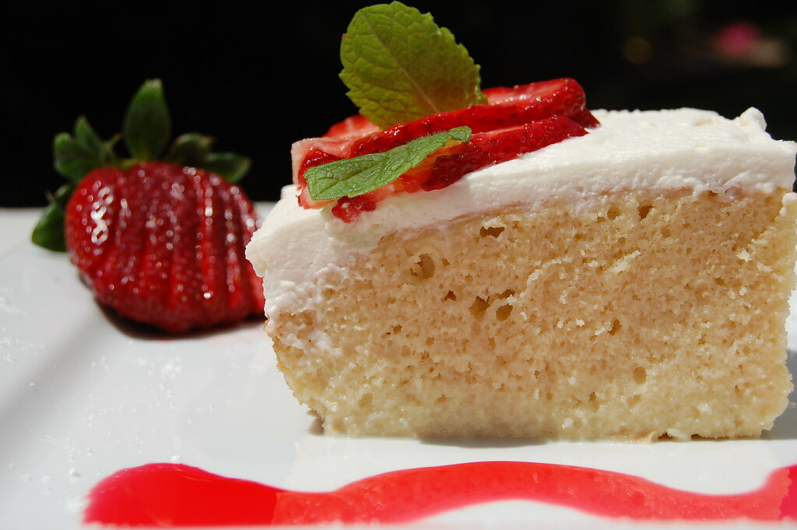

Tres Leches Cake Recipe

~Ingredients~
- Flour
- Baking Powder
- Milk
- Vanilla Extract
- Sugar
- Evaporated Milk
- Sweetened Condensed Milk
- Whole Milk
- Heavy Whipping Cream
- Eggs
~Prep Steps~
- Combine the flour, baking powder, and salt in a medium bowl.
- Separate whisked eggs into two separte bowls.
- Add 3/4 cup of sugar to the egg yolk bowl and mix until pale yellow. Then add 1/3 cup of milk and vanilla.
- Stir to combine, then pour egg yolk mixture into flower.
- Gently stir to combine but do not mix.
- Use electric beaters to beat the egg whites on high speed. As they begin to whip into stiff peaks, gradually mix in the remaining 1/4 cup of sugar. Fold the stiffly beaten egg whites into the batter gently, scraping the bottom and sides of the bowl, until combined.
- Pour batter into pan and smooth it into an even layer. Bake for 25 to 35 minutes.Remove from the oven and allow cake to cool completely.
- Combine the evaporated milk, sweetened condensed milk, and whole milk in a small bowl. Once the cake has cooled use a fork to poke holes all over the top of the cake.
- Slowly pour the milk mixture over the the top of the cake, making sure to pour near the edges and all around. Refrigerate the cake for at least 1 hour or overnight.
- Whip enough heavy cream to cover atop the cake. Once heavy whipping cream is spreaded, add a sprinkle of cinnamon and freshly slices strawberries on top.
Nutrition Facts
| Serving Size | 1 slice (1/12 of cake) |
| Amount Per Serving |
| Calories |
295 |
| %Daily value* |
| Total Fat | 10.43g | 13% |
| Cholesterol | 71mg | 24% |
| Sodium | 223mg | 10% |
| Protein | 6.59g |
~Why This Recipe Is My Fave~
This is my favorite recipe because it dives all the way down to how to make a tres leches from scratch. My sister and I would make tres leches cakes for thanksgiving for our family, so it's always nostalgic. It's taste and texture is different but immaculate!